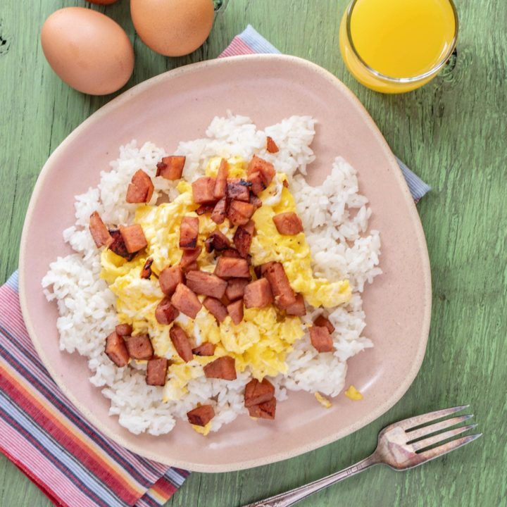

Spam, Eggs, and Rice

A Delicious Pacific Island Meal
SPAM eggs and rice is a simple yet popular dish in Hawaii. While traditionally served for breakfast, it's also great for lunch, dinner, or even a snack!
Ingredients
2 servings
- 2 cups Rice
- 4 Eggs
- 1 can SPAM
Steps
- Start your rice cooking first. If you don't know how to then you're gonna need another guide.
- Cut your slices of SPAM into 1/2 inch cubes.
- When rice has about 10 minutes to go, whisk your eggs.
- Heat a non-stick skillet on medium high and spray with cooking spray. Pour the eggs in. Scramble 'em.
- Cook the SPAM in the same skillet until a golden brown crust forms on the cubes.
- Scoop rice onto a plate and top with eggs and SPAM